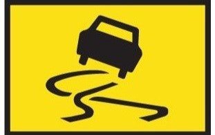
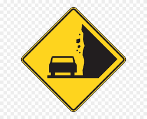
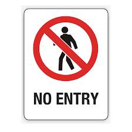
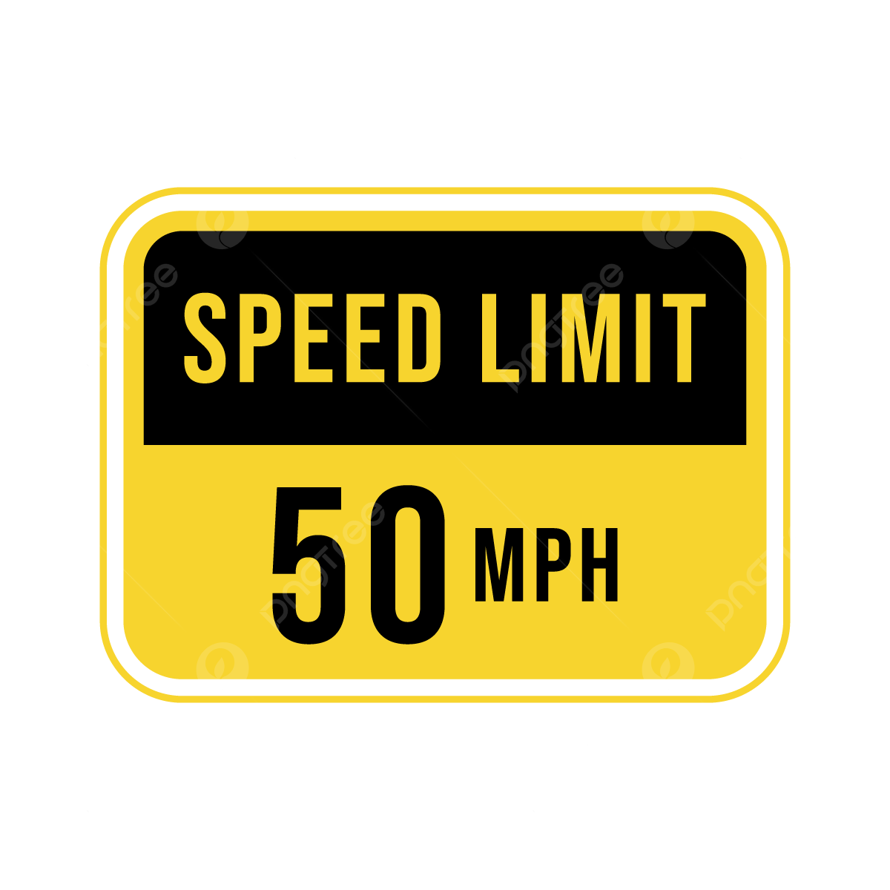
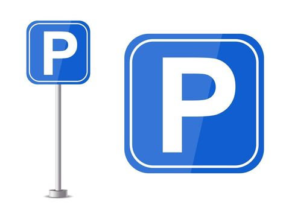

Road Signs Guide
Learn and identify road signs to ensure safe and responsible driving.
Warning Signs
Warning signs indicate potential hazards or changing road conditions.

Slippery Road Ahead

Uneven Road

Falling Rocks
Regulatory Signs
Regulatory signs indicate rules that must be followed by road users.
Stop Sign

No Entry

Speed Limit
Informational Signs
Informational signs provide guidance and information to road users.
Hospital Nearby
Fuel Station

Parking Area